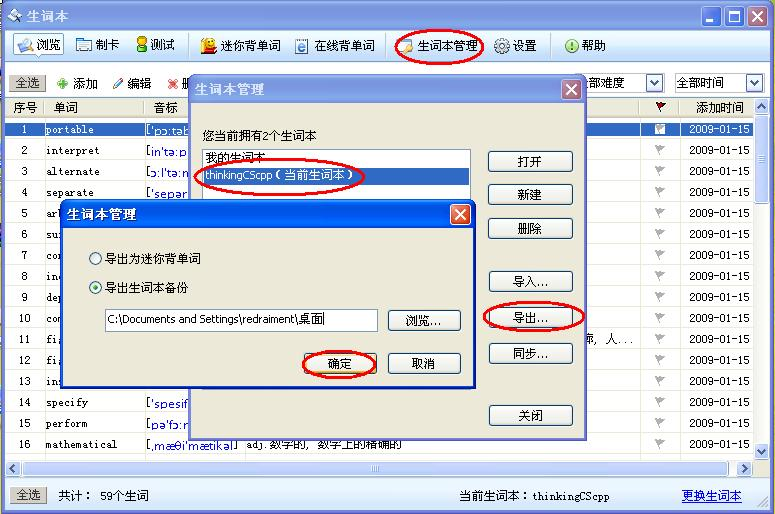
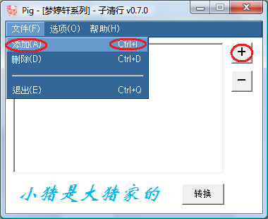
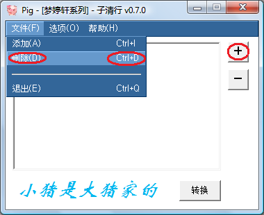
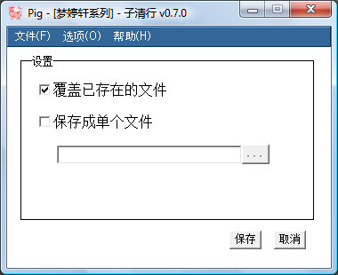
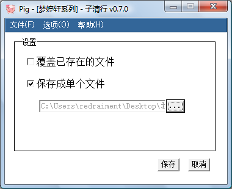
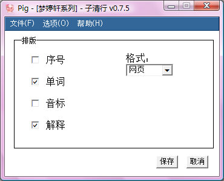
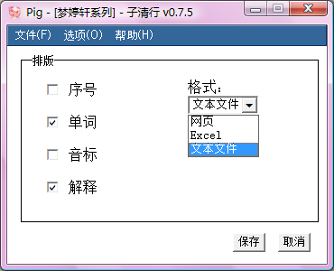

F.A.Qs
Q:
Pig 支持哪些平台
Q:
如何从“谷歌金山词霸”中导出生词本
Q:
如何将导出的生词本添加进来
Q:
如何将误加的文件从列表中删除
Q:
转换好的文件在哪里
Q:
我希望输出的文件直接覆盖以前的旧文件
Q:
如何让多个文件导出成一张网页
Q:
我不想输出序号和音标
Q:
我只想输出纯文本文件
A:
- Windows 7
- Windows Vista Home Edition +
- Windows XP + IE 6 的环境下，从“选项”菜单中切换回来时会出现一片白色（如下图），这是第三方插件jdMenu的问题，通过再次点击“选项”菜单就能恢复。因为它不影响主要功能，所以暂时不去修复！

A:
- 打开“谷歌金山词霸”生词本
- 点击“生词本管理”
- 选中你要导出的生词本
- 点击“导出”
- 选择“导出生词本备份”
- 选择目录
- 点击确定

A:
- 启动Pig
- 点击"+"，或按菜单“文件”-“添加”，或快捷键(Ctrl+I)
- 选择要转换的文件（可多选）
- 点击打开

A:
在列表中选中要删除的文件名。
点击"-"，或按菜单“文件”-“删除”，或快捷键(Ctrl+D)。
提示：按住Ctrl或Shift可选择多个文件。

A:
导出的文件就和原来的txt文件在同一个目录，相同的名字，扩展名为html。
如果原目录下有重名文件，则自动在后面添加数字，不会覆盖原文件。

A:
点击菜单“选项”-“设置”。
选中“覆盖已存在的文件”。
保存设置。

A:
点击菜单“选项”-“设置”。
点击按钮“...”选择输出路径。
保存设置。

A:
点击菜单“选项”-“排版”。
不选中“序号”和“音标”。
保存设置。

A:
点击菜单“选项”-“排版”。
在“格式”一栏中选择“文本文件”。
保存设置。

redraiment @ HZ China 2011-06-26 11:10
Pig - [梦婷轩系列] - 子清行 v0.7.5